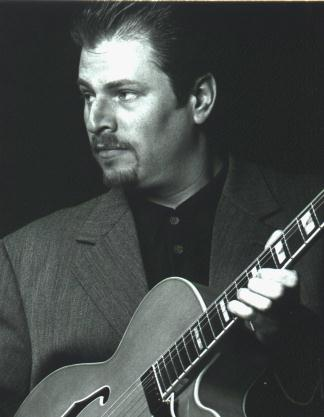

Дейву Спектеру нравится смешивать джаз, соул, фанк и все что угодно. Соединяя все воедино, он получает горючее для своего автомобиля с блюзовым инжектором. Результаты слышны на его записях - городской, мягкий соблазнительный саунд, который без труда может колесить на блюзовом Кадиллаке и по улице соул, и по джазовой авеню.Если подумать - все вполне естественно. Парень родился в Чикаго 36 лет назад среди разнообразия легендарных блюзовых личностей и музыкантов-конкурентов. Его мама - пианистка, у него есть старший брат и сестра, которая тоже играет на гитаре. Любители блюза вскоре обнаружили, что музыкальные герои Дейва (популярные Британские музыканты того времени) вдохновлялись игрой музыкантов из его собственного района. Его брат - харпист - имел в запасе с десяток историй о том, как он тусовался с Хаулин Вулфом. Последующее знакомство с городской музыкальной жизнью глубоко запало Дейву в сердце.
Будучи подростком, Спектер играл на пианино и не брал в руки гитару до тех пор, пока ему не исполнилось 18 лет, когда он направился на учебу в колледж. «Моя карьера в колледже большей частью основывалась на изучении гитары, а не на посещении занятий», смеется он. Спектер был сторонником чистого блюза на протяжении почти десяти лет, жадно впитывая в себя все, что можно было взять от таких музыкантов, как Magic Sam и T-Bone Walker, оказавших на него основное влияние. Но немного позднее он почувствовал тягу к джазу. Его гитарный звук видоизменился и приобрел тот оттенок, который теперь характерен для большинства его работ. «Меня всегда влекло к джазово-блюзовому звуку», улыбается он, « но мне также нравится играть материал, ориентированный в сторону R&B/Soul, а также чистый Чикагский блюз: вот я и смешиваю все это».
Работая в знаменитом Чикагском Jazz Record Mart, в отделе доставки Delmark Records, при входе популярного клуба B.L.U.E.S. (где он часто слушал таких легенд, как Louis Myers, Floyd Jones, Sunnyland Slim, Eddie Taylor, Jimmy Johnson, и других.), Спектер просто купался в блюзе. Устав изучать гитару по записям, он попросил Джимми Джонсона стать его преподавателем. График выступлений Джонсона не позволял давать уроки, но он порекомендовал Steve Freund, который был более десяти лет гитаристом у Sunnyland Slim. Freund оказал на Спектера большое влияние. «Я часто видел Steve и Sunnyland: это, наверное, была моя любимая группа в Чикаго (смеется). « Я приносил ему (Freund) бутылку вина, а он показывал мне фразы из Freddie King!»
Freund, кроме того, продвинул Спектера, познакомив его с барабанщиком-ветераном Sam Lay. Sam Lay вскоре взял Спектера на гастроли в группу, где играл Hubert Sumlin (наверное больше известный своим длительным сотрудничеством с Howlin' Wolf). «Hubert - настоящий блюзовый гений. Когда я впервые сыграл с ним, я был неопытен, молод и напуган! За неделю до того, как отправиться на гастроли с Sam Lay, я услышал, что Hubert тоже едет!» (смеется). «Я ОЧЕНЬ нервничал, но Hubert вел себя просто здорово, и у него замечательный характер!»
Дейв стал получать работу второго гитариста у многих музыкантов, он оттачивал чувство ритма, чувство ансамбля, получал блюзовое образование. Спектер работал с Johnny Littlejohn, Valerie Wellington, Big Time Sarah, Jimmy Johnson, а затем получил постоянный контракт на работу у Son Seals. После неполных двух лет работы с Son Seals, Спектер принял предложение выступить в составе Legendary Blues Band в рамках европейского тура Jimmy Rogers. Неплохо для белого паренька из Чикаго. Но скромный характер Спектера вкупе с его глубоким уважением к блюзовой традиции и истории, были без сомнения выигрышным сочетанием в глазах ветеранов блюза. Он тщательно выяснял все, что только мог о стилях, о выступлениях, о музыкальном бизнесе.
Как только Спектер почувствовал, что готов собрать свою собственную группу, его друг и бывший работодатель Bob Koester (Delmark Records) решил вновь заняться продюсированием музыки. Спектер переговорил с Delmark и со своим другом Ronnie Earl, в результате чего появился его дебютный альбом "Bluebird Blues" (Delmark, 1991). Не будучи вокалистом, Спектер привлек Barkin' Bill Smith для записи на студии. Альбом получил хороший резонанс и, вскоре, Delmark вновь подрядили Спектера для работы уже с другими музыкантами. К сегодняшнему дню Спектер выступил в качестве музыканта и/или продюсера более 15 альбомов, выпущенных на этом лейбле. Вокалисты Jesse Fortune, Barkin' Bill Smith, Lynwood Slim, Tad Robinson, и совсем недавно Lenny Lynn записывались с группой Спектера. Спектер также аранжировал, продюсировал, играл и сочинял для Lurrie Bell, Al Miller, Carey Bell, Floyd McDaniel, Tad Robinson и еще для длинного списка музыкантов из Чикаго. Студийные проекты заставляют его находиться в Чикаго большую часть времени, но недавно начавшиеся Европейский и Американский туры должны укрепить его репутацию. Его гитарная работа красноречиво говорит за себя.
CATHI: Так ты начинал как сторонник чистого блюза, да? А потом перешел к джазу?
DAVE: Ну, я пытался развить стиль, который включал бы в себя все начиная от Чикагского и Техасского блюза до очень блюзового джаза. Вся эта музыка в большинстве своем основывается на блюзе. Сам я предпочитаю сдержанный стиль игры. А в блюзе сейчас доминируют визжащие гитаристы. Это не мое.
CATHI: Интересно что ты работаешь с разными вокалистами. Я впервые услышала тебя на альбоме Tad Robinson.
DAVE: Да. Я никогда не пел. Tad - один из моих любимых певцов. Мы работали вместе почти два года. Работая с ним, я использовал саунд чистого Чикагского блюза в сочетании с саундом, характерным для soul/R&B, который мне тоже нравится. Певец, с которым я работаю сейчас - Lenny Lynn - большую часть своей карьеры посвятил пению джаза. Он принадлежит к школе Joe Williams, Arthur Prysock. В его репертуаре всегда было много блюза, но у него джазовый подход к пению. Я очень люблю это направление.
CATHI: Как ты начал продюсировать других музыкантов? Им нравились твои собственные записи?
DAVE: Да я очень много работал эксклюзивно для Delmark, хотя это и не было обязательством моего контракта с ними. Они всегда давали мне свободу делать что я хочу, и им нравился результат. Думаю, что и другим людям тоже, ведь они приглашали меня в качестве продюсера. Я с восторгом предвкушаю свою следующую работу. Это будет запись с участием Steve Freund и Kim Wilson.
CATHI: Здорово, значит круг снова сомкнулся?
DAVE: Да! Он дал мне возможность выступить в самом начале. Я на самом деле восхищаюсь им.
CATHI: Расскажи мне о своей роли продюсера. Что она в себя включает?
DAVE: Я сравниваю роль продюсера в записи с ролью режиссера в съемках фильма. Ты подбираешь людей и иногда сочиняешь часть материала. Ты имеешь влияние при выборе звука с режиссером во время записи на студии. Я пытаюсь добиться звука, которого хотят добиться на своей записи музыканты и, в общем, подхожу к делу, как Delmark подходит к работе со мной: пытаюсь дать исполнителю как можно больше контроля. Я не из тех продюсеров, которые играют активную роль в самом процессе записи, до тех пор, пока исполнителю не потребуется указать направление. Я стараюсь не стоять на пути исполнителя. На большинстве записей, которые я продюсировал, я играю сам, а иногда вместе со своей группой. Каталог Delmark сейчас насчитывает около 260 альбомов. Туда входит и джаз и блюз. Они выпускают все от авангардного джаза до регтайма; это очень эклектичный лейбл.
CATHI: Ну а кто такие the Bluebirds - ребята из твоей теперешней группы?
DAVE: Harlan (Terson) очень часто играет со мной на басу, хотя половину выступлений со мной играет Rob Waters на органе Hammond B-3. Когда мы играем вместе, он ведет бас педалями и левой рукой, поэтому я не прибегаю к помощи Harlan. Mike Schlick играет на барабанах, а Lenny Lynn вот уже два года как мой постоянный певец. Иногда я играю с медной группой.
CATHI: Я слышала тебе нравятся Страты, но вижу тебя с этой полуаккустической гитарой. Ты предпочитаешь ее?
DAVE: Да. Мне по прежнему нравятся Страты, у меня их три штуки, но я предпочитаю более теплый, полный звук. Поэтому я в основном играю на полуаккустическом Gibson ES 135. (Смеется) Я играю на струнах GHS и пользуюсь усилителями Victoria.
CATHI: (Смеется) Ну ладно...а как сейчас выглядит Чикагская блюзовая сцена? Я знаю, что многие большие клубы сейчас ориентируются на туристов.
DAVE: Так и есть. Им интереснее торговать сувенирными футболками, а на западе я иногда чувствую себя напряженно, так как все чаще и чаще слышу о криминальных разборках и стрельбе из проезжающих автомобилей. С другой стороны, я знаю массу музыкантов, у которых там нет никаких проблем. В Чикаго тяжело играть: очень большая конкуренция. Здесь, наверное, больше блюзовых групп, чем где-либо еще в мире! А еще, я относительно молод в этом деле, и мне трудно получать выступления в престижных клубах в выходные, потому что соперничать приходится с такими людьми как Otis Rush, Koko Taylor, Lonnie Brooks и всеми остальными! Так что приходится гастролировать. Я могу, конечно, зарабатывать на жизнь без гастролей, играя в здешних небольших барах. Но так мои слушатели будут утомляться, а репертуар устаревать. У меня есть возможность довольно регулярно играть за океаном, это помогает заработать денег и сохранить интерес.
CATHI: Я знаю, что тебя постоянно спрашивают о том, что ты смешиваешь разные стили. Что ты думаешь насчет блюза и его эволюции? Есть ли какая-то философия, какой-то критерий, которого ты придерживаешься, который помогает сохранить баланс в стремлении к своему звучанию?
DAVE: Не знаю смогу ли я четко выразить это в одном предложении, но я определенно считаю, что чувство традиции и истории - даже если оно не на 100 процентов лежит на поверхности - очень важно. Надо знать язык, чтобы говорить на нем, и я всегда предпочитал исполнителей, которые придерживались такого подхода в блюзе и джазе: чем меньше играешь - тем больше эффект.
CATHI: Так значит ты не считаешь, что музыканты исполняющие блюзовый джаз сильно отличаются от блюзовых исполнителей?
DAVE: Нет, я считаю, их музыкально более сложными и более продвинутыми на техническом уровне. Я имею ввиду, что они прибегают к ходам, гармонически выходящим за рамки блюза. Но я не думаю, что это значительный уход в сторону.
CATHI: Да, я думаю музыка развивается, и в этом нет ничего преступного, хотя я часто об этом слышу (смеется).
DAVE: (Смеется). Да, я обожаю утонченность и вкус, хотя вкус, очевидно, вещь субъективная. Разным людям нравятся разные стили, и нет ничего плохого, если твой стиль объединяет элементы джаза, фанка, R&B, соула или чего-то еще, что кажется тебе близким по духу.
CATHI: Согласна. Вкус определяет границу между плохим и хорошим, и мне всегда приятно столкнуться с человеком, обладающим вкусом.
DAVE: (Смеется) Мне тоже!
Статья Cathi Norton
Перевод Арсена Шомахова
Перепечатано из Delta Snake